App Studio's pages as short films: what each page gives your event, and what you change to get it. Each group opens with its outcome's film, the result first. Under each page film, its stops are written out. A page that serves several outcomes is shown under the first and linked from the others.
Outcome 1 of 8
Launch your event app
Your app in the App Store and Google Play, tried on real phones first.
The store reports a version as live, and the badge names it, for example “Live · 1.94.4”. It reads “Live” alone when no version name is known.
The tile shows the app's newest test build of either platform: whether it is building, ready or failed, its platform and version, and how long ago.
The one event a tile shows: the event on now (“Happening now”), else the next one to start (“Next event”), else the one that ended last (“Last event”).
Add a new app
6 stops · 0:52
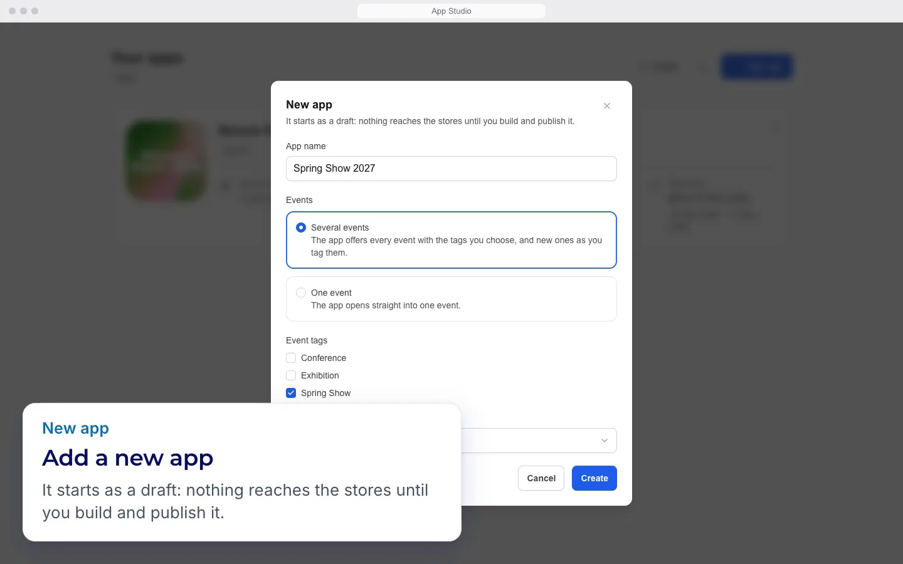
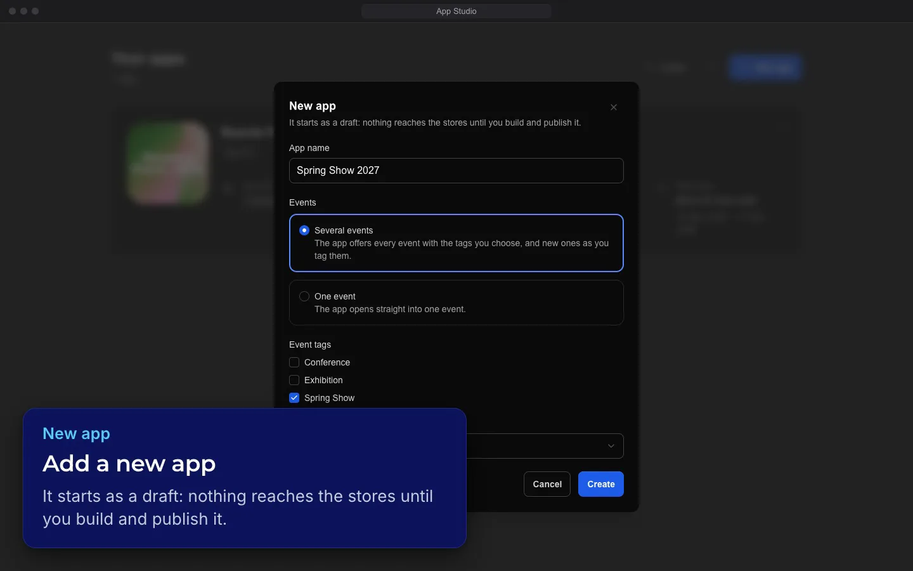
App Studio, redrawn and animated from its code.
Nothing is created until you press Create in the dialog.
Sent only when you press “Create”, without spaces at either end. It becomes the app's name in App Studio and the title of the app made in your ExpoPlatform admin.
Start here. Give the app a name and choose its events: several events by event tag, or one event.
You can also copy the look of an app you already have.
Create makes the app at once and opens it on its Overview.
Cancel or the close button (its tooltip says Close) closes the dialog without sending anything. What you filled in is dropped, and the next opening starts empty.
Name, icon & splash
6 stops · 0:55
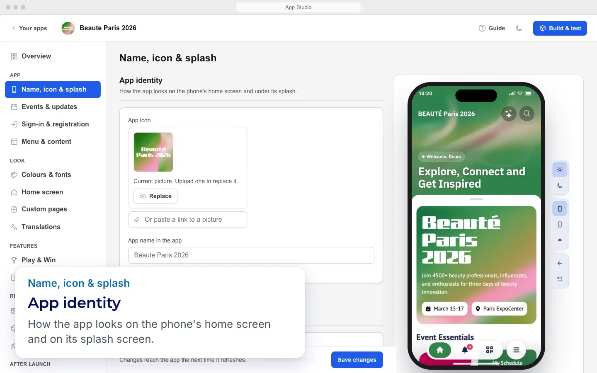
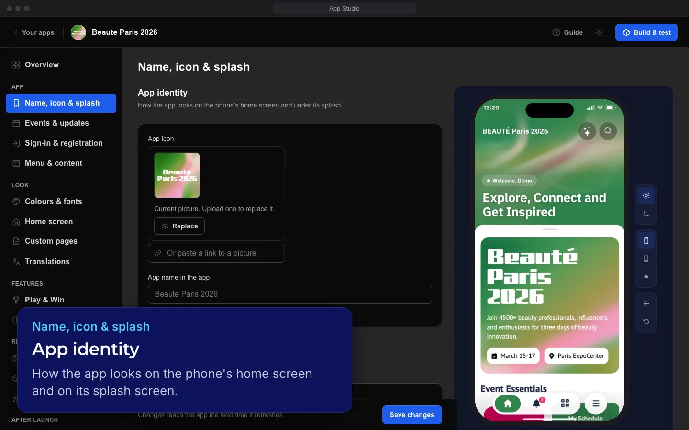
App Studio, redrawn and animated from its code. Phone: the app in App Studio's preview, with sample content, October 2026.
Upload a picture, crop it square and save it as the app's icon.
One button per platform: ‘Build for iOS’ and ‘Build for Android’. Opens a dialog for that platform; nothing starts until ‘Start the build’. Greyed out while a build of that platform is starting or running (it then reads ‘iOS build running’ or ‘Android build running’), and while ExpoPlatform has not set the app up in the stores; the reason then shows when you point at the button or reach it with the keyboard. An iOS and an Android build can run at the same time.
Check who is there already, and add more if you need to: for TestFlight, email addresses in “Add testers”; for Google Play, Google Group addresses in “Add tester groups (optional)”. Separate them with commas or spaces. Press Continue.
The build is sent to TestFlight or to Google Play internal testing and shows under “Send to testers” with its status. No ExpoPlatform approval is needed.
For each store, the six phases with their state, who acts next (“Your move”, “Our team is on it” or “The store is on it”) and the one next step with its button.
Your texts stay in App Studio: “Your listing is sent to the stores together with your publication, once ExpoPlatform approves it.” Beside the save button, App Studio says “Saved texts reach the stores when you send them.” There is no separate button that sends them: the listing is sent when ExpoPlatform approves your request to publish. Not all of it reaches each store: Google Play gets your new pictures, but not your texts.
Choose a demo event the reviewers can explore. App Studio's hint says “The event the reviewers land in. Pick one with real sessions and exhibitors.” The review check looks for at least 3 sessions on a non-empty agenda.
Two things go out by themselves: an app's first iPhone version, which Apple releases on approval, and the first 5% stage of an Android release. Later iPhone versions, and Android beyond 5%, wait for ExpoPlatform. Your ExpoPlatform team starts the rollout
Raw screenshots sell poorly. “Store studio” puts each one in a phone frame on your brand colours with a short caption - the pictures people see in the store. Press Next to open it.
The app card shows the newest iOS and Android build with its status (Queued, Building, Ready or Failed); ‘Follow it’ and ‘Build & test’ open Build & test.
The overview shows what is set up and what still needs your attention before the app can go to the stores.
Opens Name, icon & splash, where the icon and splash are changed and saved.
The ‘Event’ or ‘Events’ block lists each event linked to the app with its name and, when known, Dates, Time zone, Community and Location.
‘App updates’ shows, per platform, the version live in that store and the versions below which people must update or are asked to update. These rules are set by your ExpoPlatform team.
Outcome 2 of 8
Make the app look like your event
Your colours, fonts, home screen and pages for each event, and your app's wording.
Make the app look like your event · 0:42App Studio, redrawn and animated from its code. Phone: the app in App Studio's preview, with sample content, October 2026.
Colours & fonts
7 stops · 1:05
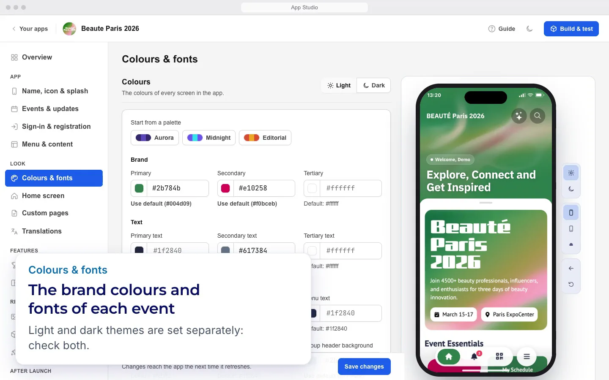
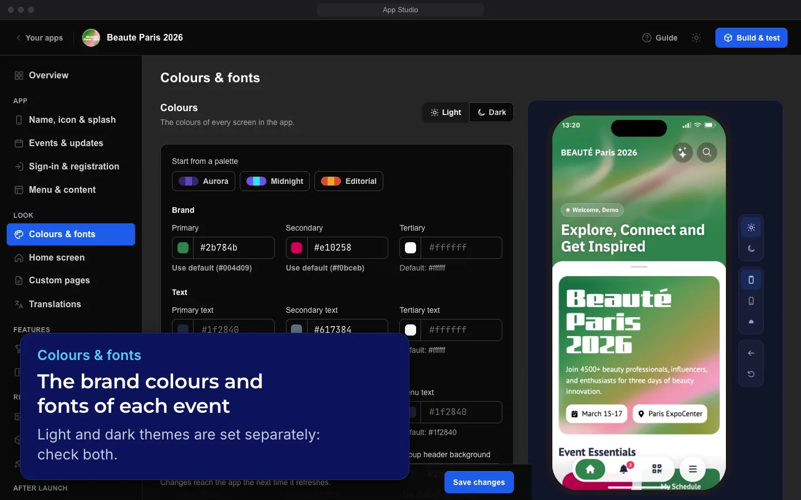
App Studio, redrawn and animated from its code. Phone: the app in App Studio's preview, with sample content, October 2026.
Once you save, the app shows them the next time it refreshes.
Set what sits behind the words at the top of the home: a picture (4:3), a muted looping video over it, your logo, and a tint that keeps the words readable.
Let people sign in and register · 0:35App Studio, redrawn and animated from its code. Phone: the app in App Studio's preview, with sample content, October 2026.
Events & updates
4 stops · 0:44
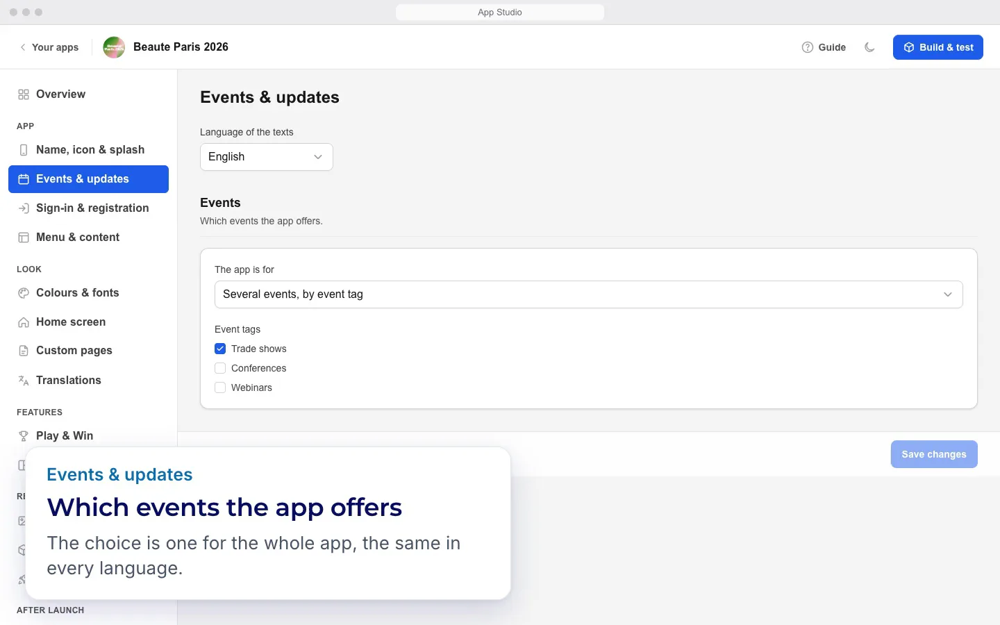
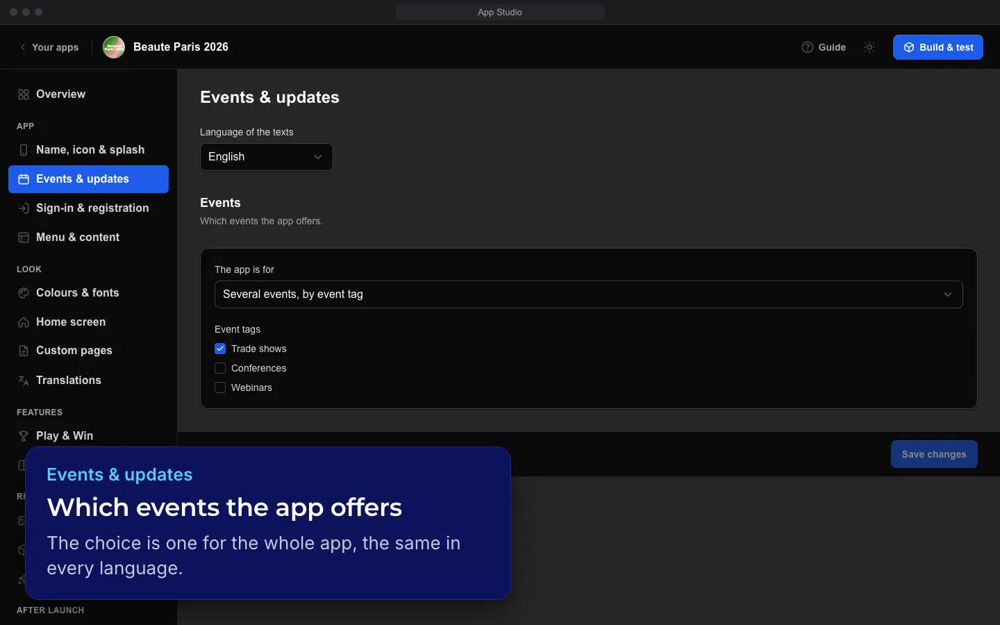
App Studio, redrawn and animated from its code.
With Several events, by event tag, the app offers the events that carry the tags you tick. With One event, it is the app of the one event you choose.
In the app: people sign in with the app's own form. On a web page: they sign in on a web page, the Web sign-in address or, when it is empty, the event's own sign-in page. Both: the app offers both, with a second button whose text you set in Web sign-in button.
With Right after choosing the event, the app shows the sign-in screen before a signed-out person enters the event. Otherwise people enter as guests and can sign in later from the side menu.
For the whole app, the sign-in screen's “Registration” button and “Sign up” link open the app's own registration form instead of the registration web page, on events with the new registration switched on; the others keep the web page.
Build the menu and content · 0:45App Studio, redrawn and animated from its code. Phone: the app in App Studio's preview, with sample content, October 2026.
Menu & content
13 stops · 1:45
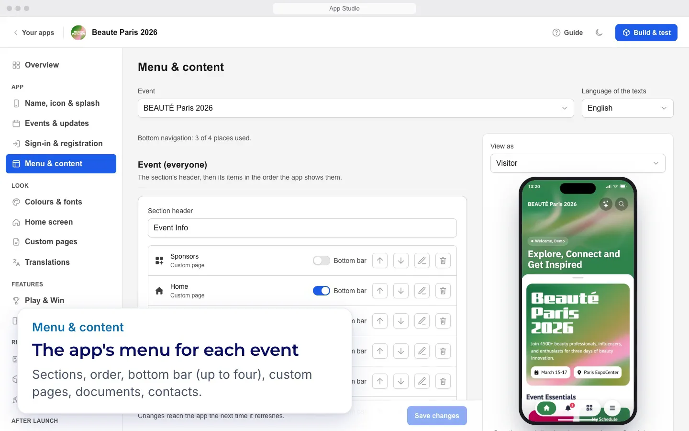
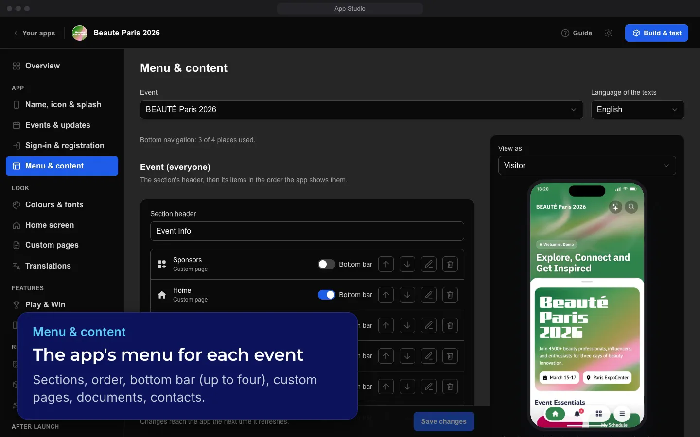
App Studio, redrawn and animated from its code. Phone: the app in App Studio's preview, with sample content, October 2026.
The section shows that event's menu, with its names and page content in that language.
Who sees an item in the app's menu. Nothing ticked means everyone who can see the section; anything ticked limits it to those people and hides it from people who are not signed in.
Get people using the app · 0:49App Studio, redrawn and animated from its code. Phone: the app in App Studio's preview, with sample content, October 2026.
Home-screen widgets
4 stops · 0:58
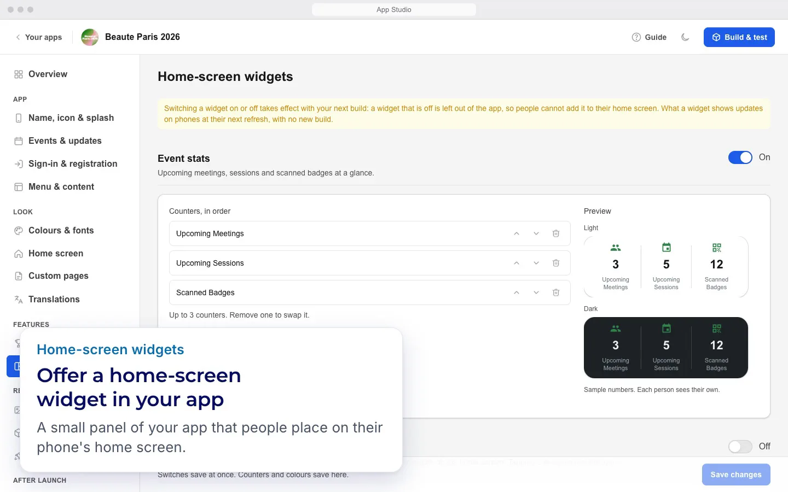
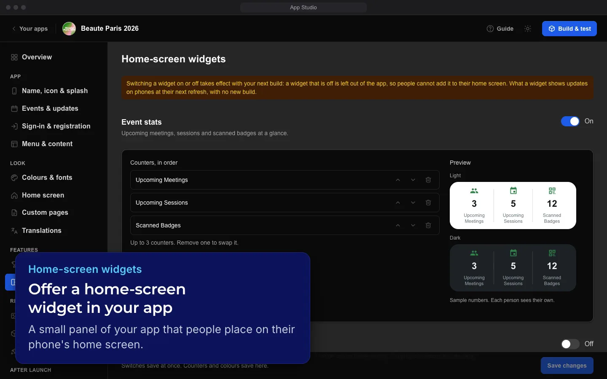
App Studio, redrawn and animated from its code.
Event stats shows up to three counters, in the order you set; each person sees their own numbers (‘Sample numbers. Each person sees their own.’).
The widget follows the phone's light or dark mode, or takes your brand colour (‘Follows the phone’s light or dark mode.’ / ‘The widget takes your brand colour.’).
Visitors without the app type their name, company and e-mail on the iPad, guess, and enter the same draw; one e-mail plays once, in the app or on the kiosk.
Change content during the event · 0:36App Studio, redrawn and animated from its code. Phone: the app in App Studio's preview, with sample content, October 2026.
Outcome 7 of 8
Release a new version
A new version through testing and the stores' review.
Choose an event, a platform or a user type, and every number on the eight dashboard tabs is read again for that slice, except a few cards that ignore some filters.
Turn what you see into a branded report for your team, sponsors or exhibitors: a cover, contents, a summary of the headline numbers and the sections you choose.
Engagement: when people use the app, screens, features, navigation, searches, filters, the assistant, matchmaking, the floor plan, notifications and experiments.
Each stop's words come from the App Studio guide, or from App Studio's own pages as the guide records them. App Studio Playbook v1.1.1, built from the App Studio guide v1.1.0, checked against App Studio c1421d4 on 14 Oct 2026.
Words from a step or a problem, such as build, widget or greyed out.